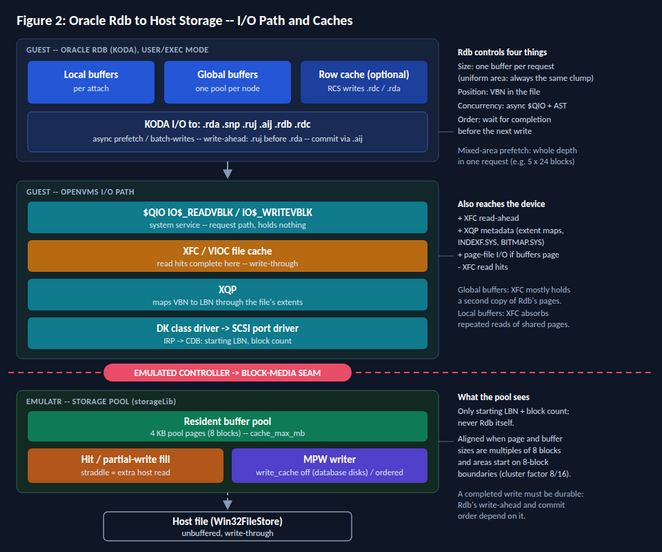

|
<< Click to Display Table of Contents >> Navigation: 6. Architecture & Internals > 6.9 Storage Engine > Storage Pool Considerations for Rdb |
An Rdb/CODASYL DBMS database brings its own caching, its own page geometry and its own write-ordering rules, and all three change how the storage pool behaves. This topic explains the interaction for Oracle Rdb on OpenVMS and gives the current configuration guidance. It is guidance for consideration: the measurements that will confirm or revise it are described at the end.
Statements taken from the Oracle Rdb manuals carry a section reference (see Sources).

Rdb's storage layer reaches disk only through OpenVMS system services. It assigns a channel to each database file and issues $QIO requests on it. Every Rdb I/O statistic is defined as a count of read-QIOs or write-QIOs: DBS_READS and DBS_WRITES for the storage area and snapshot files, and separate counters for the .aij, .ruj and root files (Performance and Tuning, Table 2-9).
The request then passes through the standard OpenVMS I/O path:
KODA $QIO IO$_READVBLK / IO$_WRITEVBLK on a file channel
P1 = buffer, P2 = byte count, P3 = virtual block number (VBN)
FDT checks and locks the buffer, builds the IRP
XFC/VIOC file cache: a read hit completes here
XQP maps VBN to logical block number (LBN) through the file's extents
DK class -> SCSI port driver -> emulated controller (CDB: LBN, block count)
EMulatR block-media seam -> storage pool -> host
EMulatR therefore never sees Rdb. It sees device commands, each a starting LBN and a block count. Rdb influences the pool only through the arguments of its $QIO calls:
•Size, through the byte count. Storage area transfers are one Rdb buffer long (see Page geometry).
•Position, through the VBN, which the XQP maps to an LBN.
•Concurrency, through asynchronous $QIO calls that complete by AST. Prefetch and batch-writes keep several requests in flight at once.
•Order, by waiting for one write to complete before issuing the next. This is how Rdb enforces its write-ahead rule (see Write ordering and durability).
The traffic that reaches the pool is not exactly Rdb's traffic. It is Rdb's $QIO requests, less the XFC read hits, plus I/O that Rdb did not issue: XFC read-ahead, XQP meta-data I/O (extent-map reads, and INDEXF.SYS and BITMAP.SYS updates when a database file extends), and page-file I/O if Rdb's buffers or global section are paged.
Rdb can lock its local buffers into physical memory as an OpenVMS buffer object (RDM$BIND_BUFOBJ_ENABLED). This removes per-I/O page locking in the FDT path and lowers the CPU cost of each request, but it does not change the size, position or number of the requests the pool receives (Performance and Tuning, 4.1.2.4).
A database read or write passes through several caches before it reaches the host device:
Layer |
Owner |
What it holds |
|---|---|---|
Local buffers (NUMBER OF BUFFERS, RDM$BIND_BUFFERS) |
Rdb, per attach |
Pages used by one attach. Each attach reads shared pages for itself; ten attaches from one process count as ten users (4.1.2). |
Global buffers (GLOBAL BUFFERS NUMBER IS, RMU/OPEN/GLOBAL_BUFFERS) |
Rdb, one pool per node in a global section |
Pages shared by every attach on the node; only one process reads a page from disk (4.1.2). Pages with the highest access temperature tend to stay here. |
Row cache (optional) |
Rdb, row cache server (RCS) |
Rows, not pages. Modified rows are written to .rdc backing files at checkpoints and to storage areas when a sweep threshold is reached (4.1.4.4). |
$QIO, XQP, drivers |
OpenVMS |
Nothing. This is the request path, not a cache. |
XFC / VIOC |
OpenVMS |
Caches file data for reads; writes are propagated according to the OpenVMS I/O/cache policy. |
Storage pool |
EMulatR (pool engine) |
4 KB pages of the disk image |
Host |
Windows and the device |
Not used for pooled images (write-through, unbuffered) |
The pool sees only what every layer above it missed. With generous global buffers, the pool receives mostly write-backs and cold reads, not repeated reads of hot pages.
The choice between local and global buffers also changes what XFC does:
•Local buffers. Every attach re-reads the pages it shares with others. XFC becomes the shared cache that absorbs those repeated reads, and less of them reach the pool.
•Global buffers. Rdb already reads each page once per node, so XFC mostly holds a second copy of pages Rdb is holding, and the pool can hold a third.
•XFC stops caching a file that is open for write on more than one cluster node. A single-node database is not affected.
In a cluster, XFC is out of the picture for a multi-node database; see Cluster considerations.
Three Rdb parameters describe the geometry. They are often confused:
Parameter |
Unit |
Scope |
Meaning |
|---|---|---|---|
Page size |
512-byte blocks |
Per storage area |
Size of one database page, chosen from the sizes of the rows stored in the area (for example 3, 6, 7 or 12 blocks). |
Page length |
Bytes |
Per storage area |
The same page size expressed in bytes, as reported by RMU Analyze (RMU$PAGE_LENGTH). It is not the buffer size. |
Buffer size |
Blocks |
Whole database |
Blocks per buffer. Must be at least the largest page size; the default is three times the page size (6 blocks for the default 2-block page) (4.1.2.1). |
The limits differ by release. The 7.0 tuning guide restricts pages and buffers to less than 64 blocks (4.1.2.1). The 7.2 RMU manual accepts buffer sizes from 2 to 64 blocks and shows a 64-block page in an example (RMU Copy_Database, Local_Buffers). RMU$PAGE_LENGTH is a signed word, whose maximum is 32,767 bytes: a 63-block page (32,256 bytes) fits and a 64-block page (32,768 bytes) does not, so 64-block pages should be confirmed on the release in use before they are relied on.
On a miss, Rdb reads enough pages to fill a buffer: a buffer's worth of contiguous pages from one storage area, in one request (4.1.2, 4.1.2.1). Storage area reads that reach OpenVMS, and then the pool, are therefore buffer-sized, not page-sized. The buffer size should divide evenly by every page size in the database, or part of each buffer is wasted: with pages of 16, 24 and 32 blocks, a 96-block buffer fits all three, while a 64-block buffer holds only two 24-block pages and wastes 16 blocks (4.1.2.1).
Whether a write-back writes the whole buffer, only the modified pages, or only the modified blocks is not documented. It is the first measurement listed at the end.
The pool works in 4 KB pages of eight blocks. Unless a transfer is a multiple of eight blocks and starts on an eight-block boundary, it straddles pool pages. For a 6-block database page, successive pages start at offsets 0, 6, 4 and 2 within a pool page:
Database page starts at (mod 8) |
Blocks |
Straddles two pool pages |
|---|---|---|
0 |
0-5 |
no |
6 |
6-11 |
yes |
4 |
12-17 |
yes |
2 |
18-23 |
no |
Half of all 6-block pages straddle two pool pages, and every 6-block write is a partial write relative to a pool page.
The same arithmetic applies to buffer-sized reads. With 6-block pages and the default 18-block buffer, buffers start at offsets 0, 2, 4 and 6 (mod 8), and every read covers parts of three pool pages, with partial pool pages at one or both ends. A 24-block buffer (four 6-block pages) in an aligned storage area covers exactly three whole pool pages. This assumes that buffers are laid out on buffer-size boundaries from the start of the area's pages.
File |
Transfer |
Pattern |
Why it matters to the pool |
|---|---|---|---|
.rda (storage area) |
Buffer size (reads); write size to be measured |
Random for hashed access; sequential runs with prefetch |
Most of the read traffic; the page write-backs |
.snp (snapshot) |
Page size of the area |
Writes only while a read-only transaction is active (4.1.11) |
Extra random writes during reporting workloads |
.ruj (recovery-unit journal) |
Small |
Sequential per attach |
Must be durable before the matching .rda write |
.aij (after-image journal) |
Small to medium |
Append only; one writer when the AIJ log server (ALS) is running (3.5.1) |
On the commit path; latency here is commit latency |
.rdb (root) |
Small |
Commit records and control blocks (Table 2-9, ROOT_WRITES) |
On the commit path unless journal optimization is enabled |
.rdc (row cache backing) |
Large |
Checkpoint writes by the RCS (4.1.4.4.1) |
Periodic write bursts |
Transfer sizes shown as small, medium and large are characterizations, not documented values.
Rdb issues storage area I/O asynchronously. The defaults shown in the tuning guide's Buffer Information example are a prefetch depth of 5 buffers, a detected-prefetch depth of 4 buffers, and batch-writes of up to 4 buffers with a clean buffer count of 5 (Example 4-2). Asynchronous prefetch reads ahead when Rdb detects a sequential scan and does not wait for the result (3.2.4); batch-writes let several buffers of an attach's allocate set be written without stalling it, and help most with allocate sets of 20 or more buffers (3.2.5).
A single attach can therefore have several requests outstanding at once. That concurrency is useful only if the emulated controller, the block-media seam and the pool accept and service more than one request at a time. If requests are completed one at a time, prefetch and batch-writes add work without reducing stalls.
Rdb's recovery depends on the order in which its writes become durable:
•Write-ahead. Before-images must be written to the .ruj file before the corresponding database page can be written back (Table 2-9, RUJ_WRITES).
•Default commit. At COMMIT, Rdb writes the .ruj buffers, then the modified pages, then the .aij buffers (if journaling is enabled), then the commit record in the root file (4.1.5).
•Fast commit. At COMMIT, Rdb writes only the .aij buffers and the root commit record (the root write is removed by journal optimization). Modified pages stay in the buffers and are written at a checkpoint, when the attach detaches, or on a metadata change. Transactions since the last checkpoint are redone from the .aij file after a failure (4.1.5.1). Fast commit requires after-image journaling.
•Memory page transfer. Lets an attach use a modified page that has not been written to disk. It requires global buffers, after-image journaling and fast commit, and a database limited to one node (4.1.5.5).
Each rule assumes that a write the device reports complete is durable. For disks on the pool engine, the storage pool's write_cache mode decides whether that holds: with off, a write completes only after it is on the host device. The direct engine makes no such guarantee, and the host device itself must honor write-through.
The commit mode also changes the write pattern the pool sees. With default commit, every commit writes back pages that are usually cold in the pool, so each commit pays the partial-write fills described below. With fast commit, commits reach the pool as .aij appends, and page write-backs arrive in bursts at checkpoints.
•A read miss fills whole pool pages. A straddling transfer touches two pool pages, so a miss fills both from the host file; afterwards both pool pages are hits until they are evicted.
•A write that covers only part of a pool page that is not resident must first read that pool page from the host (read-modify-write), because a modified pool page is always fully valid. The write waits for that read in both write modes.
•Hot database pages live in global buffers, so their reads never reach the pool and the pool's copies go cold and are evicted. When the database writes such a page back, the write arrives cold: a partial write needs one fill, a straddling one two, before the write itself.
•A write that covers whole pool pages needs no fill, whether the page is resident or not.
•Use write_cache off for database disks. With off, a completed write is on the host device, which is what Rdb's write-ahead rule and commit sequence assume. The advantage of write caching for other disks -- acknowledging a write before it is durable -- is largely lost on cold partial writes, where the fill dominates, and ordered remains experimental. The expectation that off performs as well or better for Rdb is to be confirmed by measurement.
•Consider buffer size selected as a common-multiple across all storage area page sizes. The buffer is the read transfer unit. For page sizes of 3, 4, 6, 8 and 12 blocks, 24 and 48 blocks satisfy both; 64 is possible on 7.2. The default of three times the page size is rarely a multiple of eight.
•Aim for a least common multiple. Page size is a database design decision, set by the rows and structures each storage area must hold; the pool does not change it. What can be aimed for is a chain in which each size divides the next: the buffer size is a common multiple of every storage area page size and, where the result fits within the 64-block limit, of the pool's eight-block page; and the disk cluster size (INITIALIZE /CLUSTER_SIZE) is a multiple of the buffer size. Then no transfer straddles a pool page and no buffer spans two file extents. The full chain is not always possible: very large volumes impose a large minimum cluster size. The fallback is a cluster size that is at least a multiple of eight blocks, which keeps file extents on EMulatR storage-pool page boundaries. Whether an area's data pages also start on those boundaries depends on what precedes them in the .rda file.
•The pool may see more hits. Memory page transfer works only when the database is limited to one node (4.1.5.5). In a cluster, a page modified on one node goes to disk before another node uses it, so the second node's read can be served from the storage pool's copy. This is a side effect of the pool's position, not a reason to size it up: the pool remains a fallback.
•Coordination belongs to the guest. Rdb coordinates access to a page with page locks through the lock manager. On a single node the locks are local; in a cluster they are distributed lock manager requests carried over SCA, and client nodes also reach the disk through MSCP over SCA, so both paths depend on the SCA configuration between nodes. The storage pool takes no part in either case. Its per-page locking only serializes EMulatR's own threads, so that the pool behaves as one correct disk.
•Keep the .aij file on a durable path. With fast commit, the .aij write is the commit; its latency is the commit latency, and its durability is the transaction's durability.
•The direct engine is unaffected by page geometry in this way: it reads and writes exactly the blocks requested, through the Windows cache, without the pool's durability guarantee. That also means Rdb's write-ahead and commit ordering are not guaranteed to survive a host failure on the direct engine.
The supported cluster topology serves database disks with MSCP over Cluster-SCA. One node, the serving node, has the disk attached through its EMulatR instance; every other node reaches the disk through the MSCP server on that node.
With disks MSCP-served over Cluster-SCA, only the serving node's EMulatR instance ever opens the image, so there's one pool in front of one image. The pool is coherent for the whole cluster automatically, and no IPI guard or cross-instance invalidation is needed.
The pool can't tell a remote node's I/O from a local one. Every command comes from the serving node's controller. The guest handles coherence: Rdb page locks and the Distributed Lock Manager (DLM) decide who may read or write a page. The pool's only job is to behave as one disk, which it does as long as one instance owns the image.
client node: Rdb -> $QIO -> XQP -> DUDRIVER (MSCP class) -> PEDRIVER -> 21143 (Tulip)
| host network
server node: 21143 -> PEDRIVER -> MSCP server -> DK driver -> controller -> pool -> image
•One instance owns each pooled image. The storage engine opens a pooled image without write sharing, or takes a lock file, so that a second EMulatR instance attaching the same image fails at attach time. Two instances with their own pools on one image are two caches the guest cannot see: the DLM grants a lock correctly, and the other node's pool still returns the old page. The result is silent database corruption.
•Read-after-write for every initiator. Once a write has completed, every later read of those blocks, from any node, returns it. A single pool in front of the image meets this by construction.
•Per-page serialization inside the instance. The controller thread, the MPW writer and, later, SMP vCPUs can touch the same pool page at once. A host-side lock or seqlock per pool page, held for the copy, serializes them, and no 512-byte block is ever torn. This is ordinary thread safety inside one process; it does not need, and should not use, the guest's interrupt fabric or IPIs.
•Durable completion. write_cache off applies with more force in a cluster. If the serving node's host fails with write_cache on, writes are lost that every node's Rdb has already treated as durable, and recovery becomes a cluster-wide problem.
•XFC is effectively bypassed for the shared Rdb database files. Each node opens the .RDA, .SNP, and .AIJ files for write access, so OpenVMS cannot treat them as ordinary read-only/shared file data in XFC. Rdb maintains its own buffers and the Rdb buffer pool provides the principal caching of database contents on each node.
•The pool becomes more valuable. Memory page transfer works only when the database is limited to one node (4.1.5.5). In a cluster, a page modified on one node goes to disk before another node uses it, and the second node's read is then a pool hit. The advice to keep cache_max_mb small on database disks applies to a single node; in a cluster it is probably the reverse.
•Transfer sizes may change. The MSCP server uses its own buffer resources (MSCP_BUFFER) and may fragment a large I/O request when the available buffering cannot accommodate the request. Therefore, a mixed-area prefetch read may reach the storage/pool layer as several smaller MSCP transfers.
•For clustered configurations. For clustered configurations, consider attaching and provisioning multiple network interfaces on both the host and guest for SCA communications. Dedicated interfaces may provide additional network paths and reduce contention between SCA cluster traffic and other network activity.
The number of interfaces required will depend on the cluster configuration and workload. Multiple SCA interfaces should therefore be regarded as a configuration and isolation option, rather than an assumption of proportional performance improvement.
Where practical, these dedicated SCA network interfaces can be placed on a separate, off-LAN network through an unmanaged Ethernet switch. This provides physical network isolation for cluster communications and avoids competing with ordinary LAN traffic.
This consideration is independent of the EMulatR storage-pool architecture, but may be relevant when evaluating overall clustered I/O behavior and SCA communications.
•No disk failover. Serving a disk from two nodes requires both to have direct access to it, which in EMulatR means two instances on one image. That is the unsafe case above, so a disk MSCP-served from one node has no failover. Dual-served disks would need read caching turned off for that image, or a cross-instance coherence mechanism; neither is implemented.
•No shared bus between instances. A SCSI bus shared by two EMulatR instances has the same problem and is not supported for pooled images.
Rdb stores rows by hashed placement (the target page is computed) or sequentially (rows appended to the area, like a flat table). Hashed access touches single pages at random, so each miss pays the straddle cost. Sequential scans read runs of contiguous blocks, which amortize it. Rdb's own asynchronous prefetch, and XFC read-ahead, already issue sequential reads ahead of the scan, so the benefit of read-ahead in the pool, which is not implemented, is expected to be smaller than it would be for a plain file workload.
EMulatR sees every guest request as a starting block and a block count, so the open questions can be answered directly rather than assumed:
•Whether a write-back writes the whole buffer, only the modified pages, or only the modified blocks, with OpenVMS file caching on and off: update a row on the first or second block of a known page, force the write-back (RMU/CHECKPOINT under fast commit), and record the writes that reach that page's blocks.
•Where storage area transfers start: a histogram of starting LBN mod 8 and of transfer length for the .rda and .snp LBN ranges. This confirms whether buffers fall on buffer-size boundaries and whether the area is aligned.
•How many requests are outstanding at once, with asynchronous prefetch and batch-writes enabled and disabled.
•Rdb's own count against the pool's: DBS_READS plus DBS_WRITES from the Performance Monitor I/O summary against the pool commands for the .rda and .snp ranges. The difference should be explained by XFC hits (SHOW MEMORY/CACHE), XFC read-ahead, XQP metadata I/O and paging.
•In a cluster: transfer lengths at the pool for I/O issued on client nodes, to see whether the MSCP server splits large transfers; and the pool hit ratio on pages modified on one node and then read on another.
•Exclusive ownership: attach the same pooled image to a second EMulatR instance and confirm that the attach fails.
•Host reads per guest read, fills caused by partial writes, and the pool hit ratio, across database page sizes (3, 6, 7, 8, 12, 16 blocks) and buffer sizes (default, 24, 48), hashed and sequential placement, default and fast commit, the direct engine and the pool with write_cache off and ordered, with and without global buffers.
The EMulatR release notes will publish the resulting performance test metrics.
•Oracle Rdb7 Guide to Database Performance and Tuning, Release 7.0 (A41747-1): Table 2-9 (Oracle Rdb data items); 3.2.4 Asynchronous Prefetch; 3.2.5 Asynchronous Batch-Write Operations; 3.5.1 AIJ Log Server; 4.1.2 Managing Buffers, 4.1.2.1 Specifying Buffer Size, 4.1.2.4 Locking Local Buffers, 4.1.2.5 Global Buffer Pools, Example 4-2; 4.1.4.4 Row Cache Server; 4.1.5 Fast Commit, 4.1.5.1, 4.1.5.5 Memory Page Transfers; 4.1.11 Accessing the Snapshot File.
•Oracle RMU Reference Manual, Release 7.2: RMU Analyze (RMU$PAGE_LENGTH); RMU Copy_Database and RMU Restore (Local_Buffers); RMU Open (Global_Buffers); RMU Checkpoint; RMU Server Record_Cache Checkpoint.
See Also.